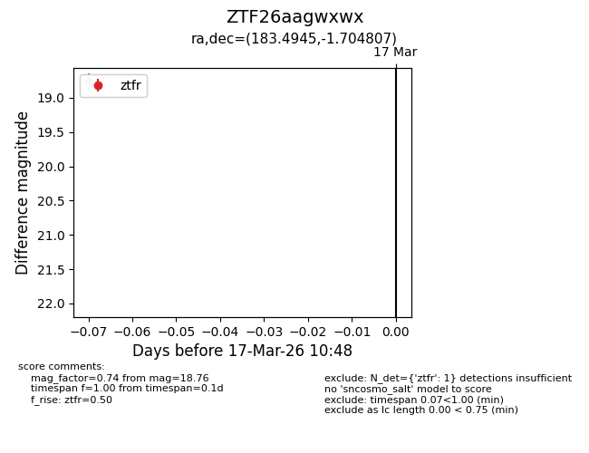
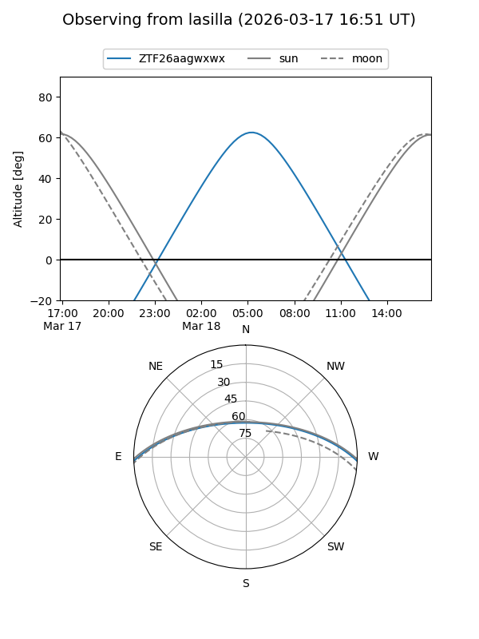
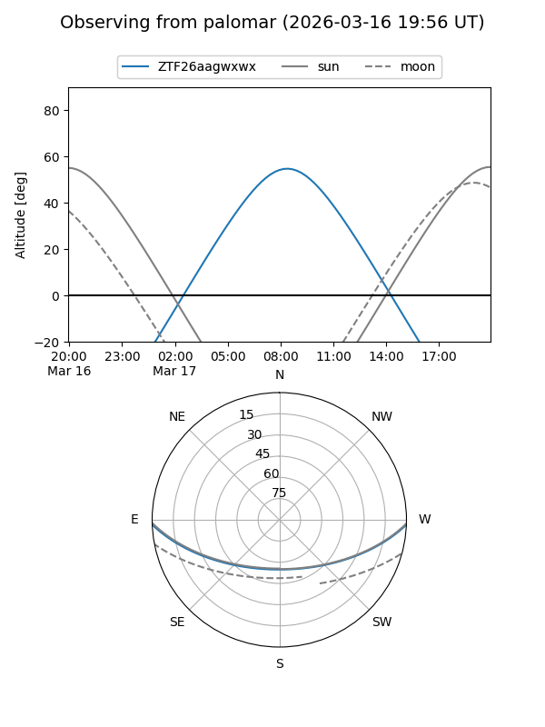

ZTF26aagwxwx
Target ZTF26aagwxwx at 2026-03-17 10:50
Aliases and brokers:
FINK: link
Lasair: link
ALeRCE: link
alt names
ZTF26aagwxwx (ztf,fink_ztf)
Coordinates:
equatorial (ra, dec) = 183.4945,-1.70481
equatorial (HMS+DMS) = 12:13:58.67,-01:42:17.31
galactic (l, b) = (284.0732,+59.78827)
Flags:
Photometry:
last ztfr=18.76
1 ztfr detections
Lightcurve

Visibility


Additional plots